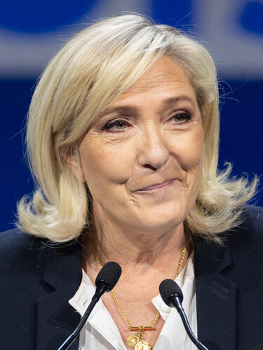
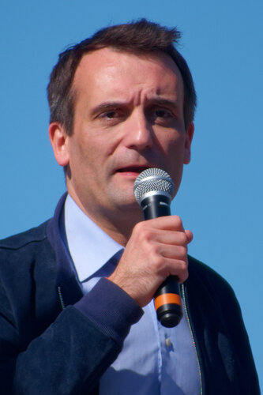

Appartenance nationale
Immigration, citoyenneté et accès aux droits sont au centre de l’analyse lorsque les propositions hiérarchisent les appartenances ou réservent des droits au groupe national.
FAMILLE POLITIQUE
La littérature sur la droite radicale populiste souligne le nativisme — la priorité accordée au groupe national —, l’autoritarisme et le populisme. L’extrême droite, au sens strict, se distingue par le rejet de la démocratie. Cette catégorie rassemble des courants différents : elle ne signifie pas que chaque candidat rejette la démocratie.
BouclierLa nation, les frontières et l’autorité comme objets d’analyse. Symbole éditorial, sans valeur d’emblème officiel.
LA QUESTION CENTRALE
Immigration, citoyenneté et accès aux droits sont au centre de l’analyse lorsque les propositions hiérarchisent les appartenances ou réservent des droits au groupe national.
La place des contre-pouvoirs, des minorités et de l’opposition distingue l’usage électoral de la démocratie du respect de l’ensemble de ses garanties.
Libéralisme, protectionnisme et protection sociale réservée aux nationaux peuvent se combiner. L’orientation économique n’est pas uniformément la même.
ORIGINES ET TRANSFORMATIONS
Cas Mudde définit la droite radicale populiste à partir du nativisme, de l’autoritarisme et du populisme. Le nativisme vise une priorité au groupe national défini comme légitime ; l’autoritarisme valorise l’ordre et la sanction ; le populisme oppose un « peuple » vertueux à des élites jugées corrompues.
La distinction entre radical et extrême porte notamment sur la démocratie : une droite radicale peut accepter les élections tout en contestant des garanties de la démocratie libérale, tandis que l’extrême droite au sens strict rejette la démocratie elle-même. Notre catégorie commune doit donc être lue avec la justification propre à chaque candidature.
DES INFLUENCES À DISTINGUER
Rémond et Sternhell proposent des lectures distinctes de l’histoire des droites et des nationalismes. Cette controverse compte : l’extrême droite contemporaine ne se laisse pas déduire d’une simple continuité avec le légitimisme ou le bonapartisme.
Nationalisme de l’enracinement et de l’appartenance ; une référence de l’histoire intellectuelle de certains nationalismes français.
Nationalisme intégral, monarchisme et antisémitisme : une tradition historique d’extrême droite dont il faut décrire les spécificités plutôt que la projeter sur tout parti actuel.
Ces noms décrivent des traditions et des réemplois historiquement documentés, pas une adhésion attribuée par défaut à chaque élu. Pour les partis contemporains, nativisme, autoritarisme, populisme et rapport au pluralisme sont examinés à partir de leurs positions propres.
Étudier les nationalismes et les critiques de la démocratie libérale en distinguant doctrines, régimes et époques. Un chapitre sur Maurras ou le totalitarisme ne permet pas d’assimiler automatiquement un parti contemporain à ces références.
Philippe Nemo, Histoire des idées politiques aux Temps modernes et contemporains, PUF, « Quadrige », 2013 [2002]. Référence complète et périmètre de consultation.
Ces renvois identifient les chapitres utiles. Les extraits accessibles et le sommaire ont été consultés ; ils ne constituent pas une lecture intégrale de l’ouvrage. Cette perspective est croisée avec les autres références du dossier.
DES IDÉES AUX ORGANISATIONS
3 formations dans notre annuaire non exhaustif. Ce rattachement principal ne résume pas toute la diversité interne d’un parti.
Explorer l’annuaire des partis avec ce filtre →PRÉSIDENTIELLE 2027
Le classement personnel est expliqué dans chaque profil. Il peut différer de celui d’un parti ; une ancienne affiliation ne suffit pas à le déterminer.

Rassemblement national
Députée du Pas-de-Calais et présidente du groupe RN à l’Assemblée nationale, elle a déjà participé aux présidentielles de 2012, 2017 et 2022.
Profil et programme · ébauche →
Les Patriotes
Ancien député européen et ancien vice-président du Front national, il préside Les Patriotes.
Profil et programme · ébauche →Reconquête
Ancien journaliste et essayiste, il a fondé Reconquête et a été candidat à la présidentielle de 2022.
Profil et programme · ébauche →Cette sélection s’inscrit dans une bibliographie plus large. Les notices précisent ce qui a été consulté et ce que chaque référence apporte ; aucune filiation personnelle n’est déduite d’un seul rapprochement historique.
Méthode et bibliographie complète →